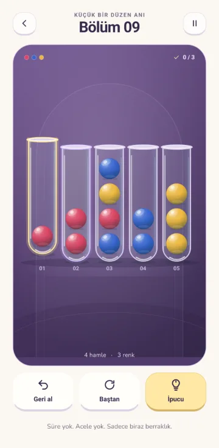
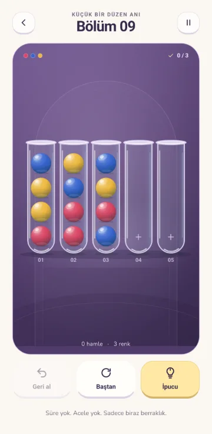
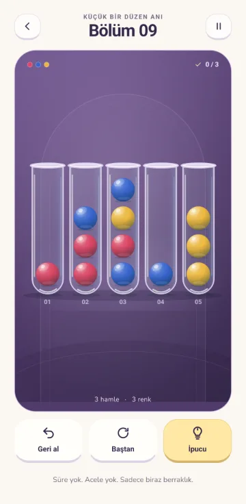
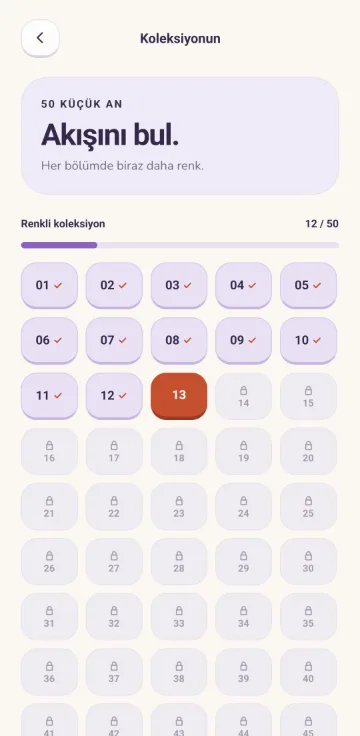
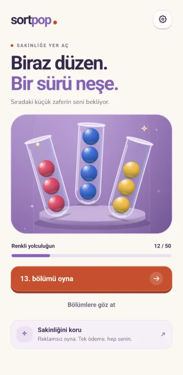

50 doğrulanmış bölüm
Biraz düzen, her seferinde bir renk.
Sort Pop, kısa molalarda kendi hızında oynayabileceğin bir top sıralama bulmacası. Renkli topları tüpler arasında taşı, her tüpte tek renk topla. Birkaç hamle sonrasını düşün, başka bir yol dene ve tahtayı düzene sok.
Yakında Google Play ve App Store'da
- Çevrimdışı çalışır
- Hesap yok
- Geri alma hep ücretsiz

Kalabalık değil, sakin hissettirsin diye
Her bölümün çözümü bir çözücüyle doğrulandı. Sizi bekleyenler şunlar.
-
50 doğrulanmış bölüm
50 başlangıç tahtasının her biri için çözüm bir çözücüyle doğrulandı. Hamlelerin çıkmaza girerse geri al veya bölümü baştan başlatıp başka bir yol dene.
-
İki dokunuşla hamle
Bir tüpe dokunun, sonra gideceği yere dokunun. Üstteki aynı renkli toplar birlikte taşınır. Bir tüpte aynı renkten dört top olunca o tüp tamamdır.
-
Ücretsiz geri alma ve yeniden başlama
İstediğiniz kadar geri alın, istediğiniz zaman bölümü baştan başlatın. Süre sayacı, can, enerji ya da korunacak bir seri yok.
-
Gerçekten işe yarayan ipuçları
Her denemede bir ücretsiz ipucu var. İpuçları rastgele tahmin değil, hâlâ çözüme götüren gerçek bir sonraki hamleyi gösterir.
-
Renklerin yanında semboller
Toplardaki renk sembolleri renk körlüğü olan oyunculara yardımcı olur. Ses, titreşim ve hareketin her birinin ayrı bir anahtarı var.
-
Çevrimdışı, telefonunuzda kayıtlı
Bağlantı olmadan her yerde oynayın. İlerlemeniz cihazda saklanır, kaldığınız yerden devam edersiniz.
Nasıl oynanır?
Bir bölümde öğrenirsiniz.
-
Adım 1: Bir tüpe dokunun
Üstündeki topları taşımak istediğiniz tüpü seçin.
-
Adım 2: Gideceği yere dokunun
Boş bir tüpe ya da aynı renkli topların üstüne bırakın. Aynı renkli grup birlikte taşınır.
-
Adım 3: Her tüpü tek renkle doldurun
Tüp başına aynı renkten dört top bölümü bitirir. Takıldınız mı? Geri alın, baştan başlayın ya da ipucu kullanın.
İçeriden bir bakış
Gerçek Android oyun ekranları.




Android yayın adayından emülatörde Türkçe olarak yakalandı.
Reklamlar ve isteğe bağlı Premium, açıkça
Oyun ücretsiz oynanır ve reklamlarla desteklenir. Nasıl işlediği tam olarak şöyle.
- İlk beş bölüm tamamlayışınız tamamen reklamsızdır.
- Sonrasında bir sonraki bölüme geçerken reklam çıkabilir. Bulmacanın ortasında asla.
- Ödüllü video yalnızca sizin tercihinizle, ekstra bir ipucu için izlenir.
- Reklamlar Google AdMob'dan gelir. Yasanın gerektirdiği yerlerde önce bir onay formu görürsünüz.
- İsteğe bağlı tek seferlik Premium satın alımı, ödüllü videolar dahil tüm reklamları kaldırır ve her bölüm denemesinde üç reklamsız ipucu verir. Geri alma herkes için ücretsiz kalır.
İlerlemeniz telefonunuzda kalır
Oyun için hesap, kayıt ya da sunucu yok. Oyun ilerlemenizi cihazınıza kaydeder. Dışarıdaki tek hizmetler yukarıda anlatılan reklamlar ve, isterseniz, mağaza üzerinden satın almadır.
- Hesap ya da kayıt yok
- İlerleme cihazda saklanır
- Gereken yerlerde reklam onayı gösterilir
Sorular
Sort Pop çıktı mı?
Henüz değil, geliştirme sürüyor. Mağaza sayfası açıldığında bu sayfadan bağlantı verilecek.
Ücretsiz mi?
Evet, oyun ücretsiz ve reklamlarla oynanır (yukarıdaki “Reklamlar ve isteğe bağlı Premium” bölümüne bakın). İsteğe bağlı tek seferlik Premium satın alımı tüm reklamları kaldırır ve her bölüm denemesinde üç reklamsız ipucu verir. Abonelik yok.
Kaç bölüm var?
Elli; her birinin çözümü bir çözücüyle doğrulandı. Günlük görev ya da sonsuz mod yok.
İnternet bağlantısı gerekir mi?
Bulmacalar çevrimdışı oynanır. Reklamlar ve isteğe bağlı mağaza satın alımları bağlantı gerektirir.
Başka bir dilde oynayabilir miyim?
Arayüz İngilizce ve Türkçedir.
Uygulamayı kapatırsam ilerlemem kaybolur mu?
Hayır. İlerleme cihazınızda saklanır ve oyun kaldığınız yerden devam eder. Bulut kaydı yok; bu yüzden ilerleme telefonlar arasında taşınmaz.
Bir tüp seç, rengi eşleştir ve sıradaki hamleni yap.
Sort Pop yolda. Mağazalarda yer alana kadar indirilecek bir şey yok.
Yakında Google Play ve App Store'da